Self-Healing RAG: A Protocol for Retrieval That Can Repair Itself
The protocol is the contribution. The financial-document QA system is a worked implementation. Neither the benchmark, nor the vector database, nor the language model defines Self-Healing RAG.
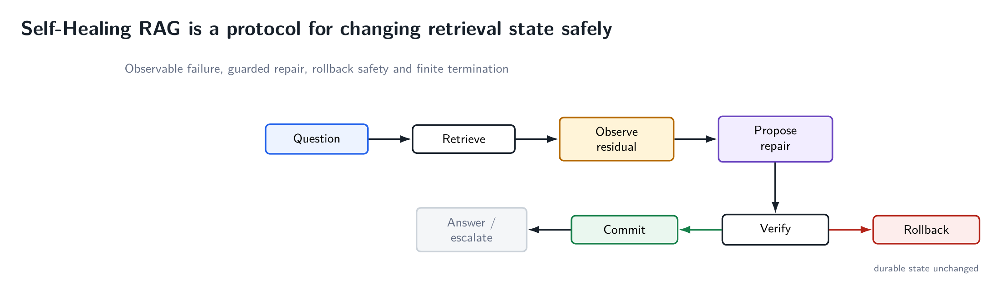
Most RAG diagrams end exactly where the difficult engineering begins. They show a question entering a retriever, a handful of chunks entering a prompt, and an answer coming out. That picture is fine when retrieval succeeds. When retrieval misses one operand, retrieves the wrong period, loses a previously useful passage, or repeatedly returns the same inadequate context, the pipeline has no native semantics for what should happen next.
That is the problem Self-Healing RAG is meant to isolate. It is not another dataset. It is not a fine-tuned model. It is not even a particular retrieval algorithm. It is a protocol for governing changes to retrieval state.
Self-healing means observable failure + targeted repair + independent verification + commit/rollback + finite termination.
The proof-of-concept repository makes those control semantics deliberately explicit. A second repository explores a much cheaper from-scratch implementation of the same idea. The two should be read as protocol and worked implementation, not as two model checkpoints.
Static RAG has a recovery problem, not merely a relevance problem
A static RAG pipeline can be written schematically as q → E → y: a question produces an evidence set, and the evidence set produces an answer. The abstraction does not say whether the evidence is sufficient for this question, what part is missing, whether a retry is an improvement, or how to restore the last known-good context after a bad retry.
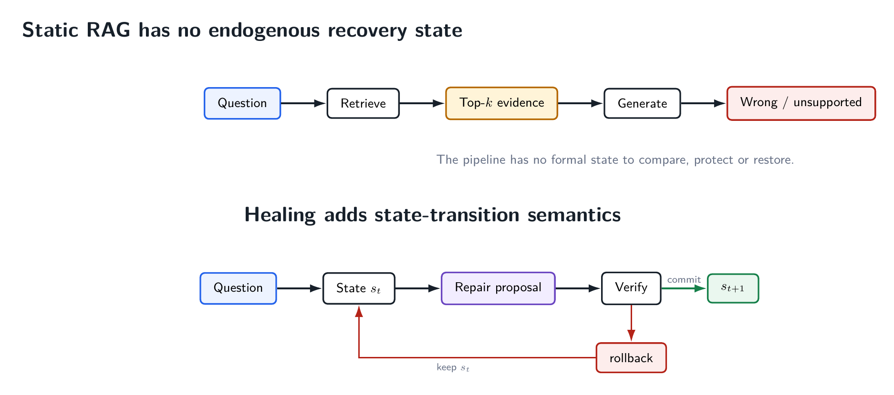
Modern adaptive RAG systems already introduce retrieval timing, self-reflection, critique, query rewriting, corrective retrieval, reranking and agentic control. Those are important predecessors. The narrower systems question here is different: what is the admissibility rule for changing the evidence state?
The Self-Healing RAG answer is transactional. A new retrieval result is only a proposal. It does not automatically replace the current evidence. The proposal must be evaluated against the current state. If it passes the guards, it is committed. If it fails, it is rolled back.
The prompt is not the state
For a question q, the v0.1 protocol represents the operational state as s = (q, E, R, h, τ). Here E is active evidence, R is a frozen requirement vector, h records visited evidence signatures, and τ is the durable transaction history.
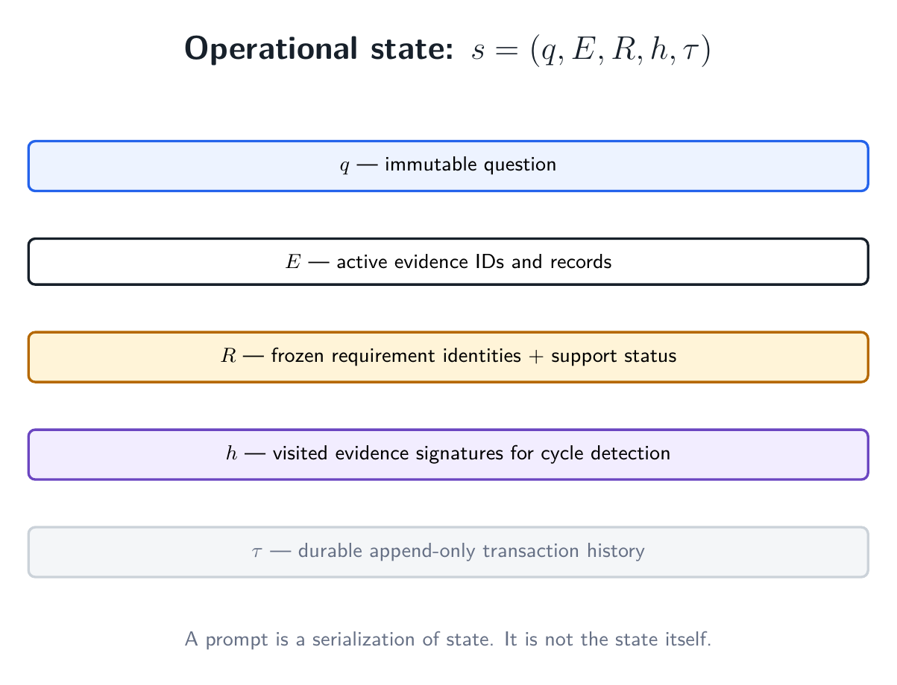
This distinction sounds pedantic until a system retries more than once. A prompt is a transient serialization. It does not automatically remember which requirements were already supported, which candidate was rejected five steps ago, or whether the system has returned to an earlier evidence configuration. A healing controller needs those facts to persist independently of the next LLM call.
Durable state also changes debugging. Instead of asking, “Why did the model answer this way?”, one can ask a sequence of narrower questions: What evidence was active? Which requirement was open? Which action was proposed? What did verification say? Why did the proposal commit or roll back? Which terminal condition ended the case?
Retrieval sufficiency is query-specific
Similarity scores alone do not tell us whether a retrieved set is sufficient to answer a particular question. A financial question may need two operands, a year, a unit and a scale. Five highly relevant passages can still be useless if they all omit the denominator.
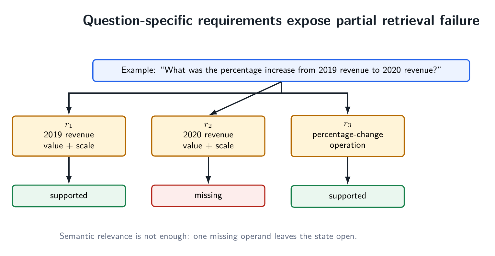
The controller therefore decomposes a question into evidence requirements. For a percentage change, the old value and new value are separate requirements. If scale or period determines which number is admissible, those constraints belong in the requirement descriptions. The requirement identities are frozen during a transaction. A verifier may update support status, but it may not quietly delete a difficult requirement or rewrite the problem after seeing a proposal.
This is crucial. Without frozen requirements, a “better” state can be manufactured simply by changing what counts as success.
A residual gives repair a monotone objective
v0.1 uses three operational requirement states: supported, uncertain and missing. They receive costs 0, 1 and 2 respectively. The residual is the sum of those costs.
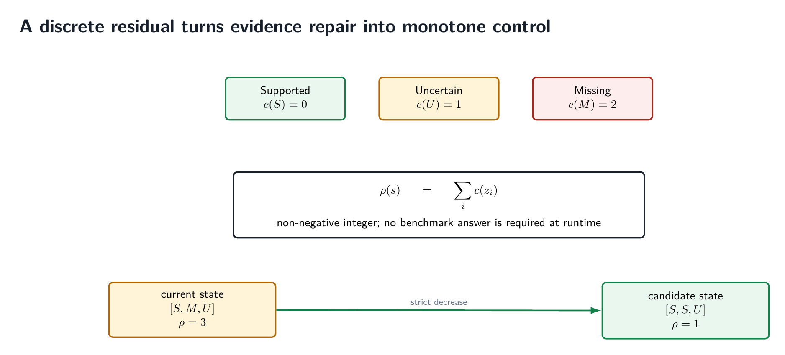
The residual does not use the benchmark answer. During inference, the controller does not need to know whether its final answer matches a hidden label. It needs to know whether its evidence state has measurably improved. That separation keeps gold evaluation outside the control loop.
A discrete objective also gives a useful intermediate notion of progress. A case can remain open while moving from two missing requirements to one uncertain requirement. Binary success/failure would throw that information away.
A repair is a transaction
A repair attempt is represented by a transaction T = (s, a, p, v, d, s*): current durable state, selected action, tentative proposal, verification result, decision, and resulting durable state.
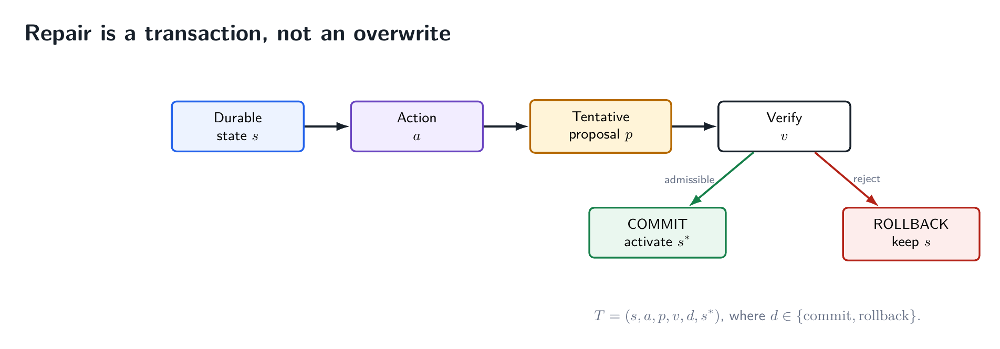
That small change in semantics is powerful. The retriever is free to be aggressive because the controller is conservative. Semantic search, lexical search, document-local expansion, query reformulation or another retrieval strategy may all propose evidence. None of them receives the right to mutate durable state merely because it returned results.
“Try another query” is an action. “Replace the current context with whatever came back” is a policy. Self-Healing RAG separates the two.
Lower residual is not enough
Suppose a new retrieval finds a missing operand but evicts the only evidence supporting another requirement. The aggregate residual can fall while the system forgets something it already knew. The commit rule therefore has a second guard: previously supported requirements must remain supported.
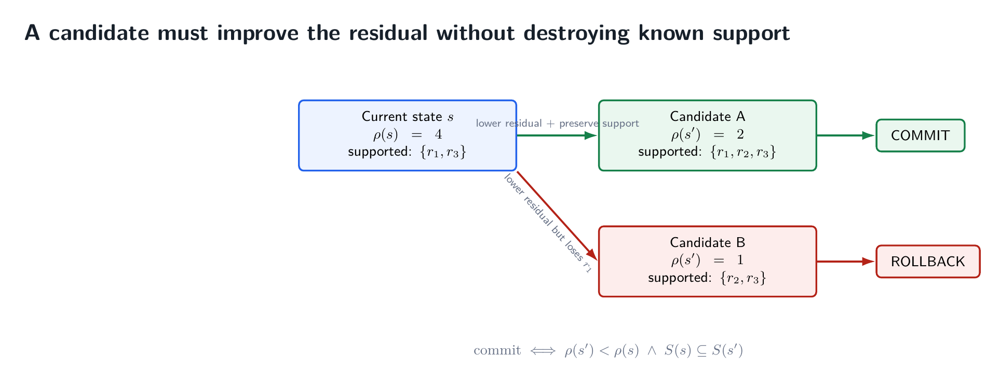
This is evidence monotonicity at the semantic level. The protocol does not demand that a particular chunk ID remain forever. Evidence can be replaced. What must survive is the support already established for the question.
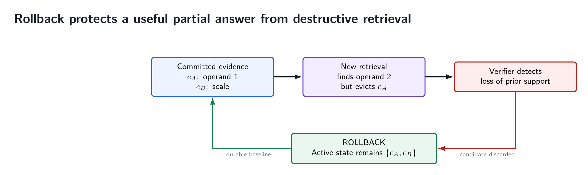
Rollback is therefore not an exceptional error path. It is expected behavior. A repair mechanism that never rolls back is probably not enforcing a meaningful improvement contract.
Finite autonomy requires explicit stopping rules
A loop that can retrieve again is not yet autonomous. It also needs to know when retrieval has become futile. v0.1 tracks evidence signatures so that exact state cycles can be detected. It also bounds the available repair actions. Since the residual is a non-negative integer and each committed transition strictly lowers it, the controller cannot make infinitely many accepted improvements.
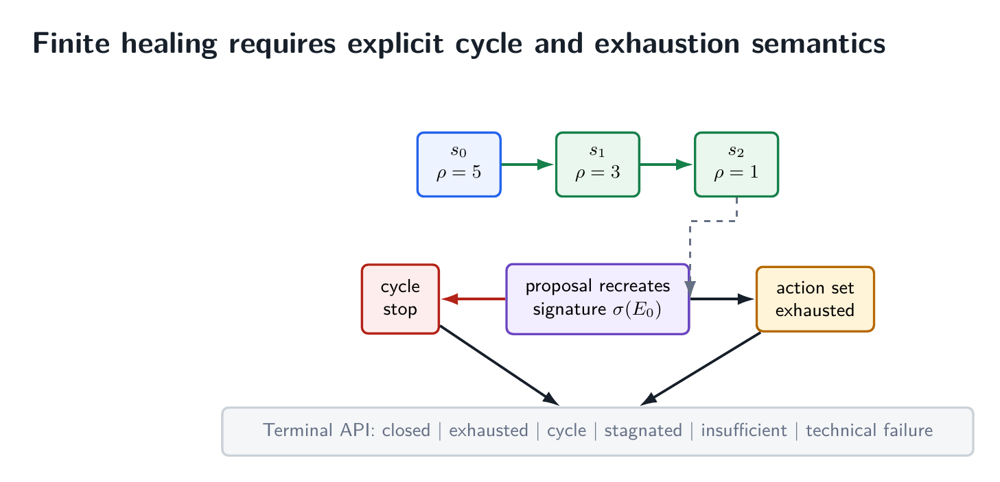
This matters because a reliable system must be allowed to say, “bounded recovery ended without verified closure.” Otherwise self-healing becomes a euphemism for unbounded compute followed by an answer that may still be unsupported.
The proof of concept later adds a terminal best-effort resolver so that every validation item receives a prediction for benchmark scoring. Those cases are labeled separately. Benchmark coverage is not silently redefined as protocol-level verified closure.
The protocol is not the implementation
At this point the separation should be clear. The protocol requires an observable evidence state, a query-specific notion of residual, tentative repair proposals, independent verification, commit/rollback, and bounded termination. It does not require Chroma, MiniLM, Qwen, financial documents, cosine search or even a vector database.
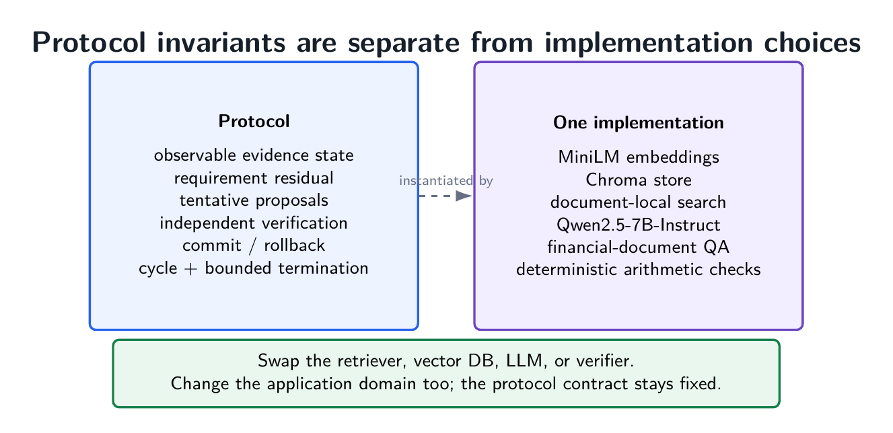
This is why forcing the repositories into a model-hub abstraction is misleading. There are no new trained weights that define Self-Healing RAG. The identity of the system lives in the control contract.
The worked example: financial-document question answering
A protocol needs a setting in which retrieval failure is common enough to exercise it. The v0.1 proof of concept uses a strict local corpus built around the TAT-DQA/TAT-QA financial-document setting. The frozen corpus contains 277 documents, 1,599 questions, 14,542 total units, and 3,838 searchable paragraph and table-row evidence records.
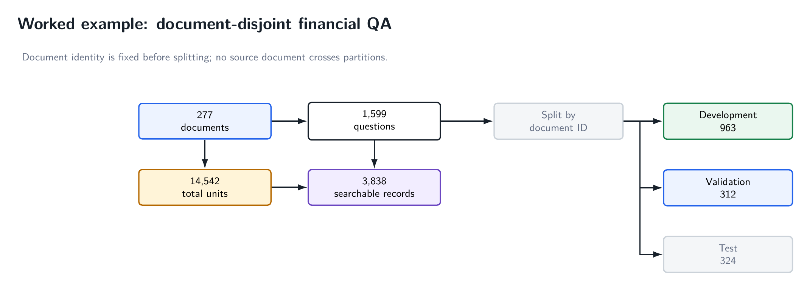
The source document is known to document-local repair, so a question-level random split would be too weak. Document identity is assigned before the split to prevent the same source document from crossing development and validation boundaries.
The reference implementation uses 384-dimensional sentence-transformers/all-MiniLM-L6-v2 embeddings in a persistent Chroma store. The v0.1 generator is Qwen2.5-7B-Instruct, run locally in 4-bit NF4 quantization on an RTX 4060 laptop GPU with 8 GiB VRAM. Those details make the experiment reproducible; they do not define the protocol.
Why healing is actually needed in this example
At the operating depth of top-5, retrieval is materially incomplete. Development requirement recall is 45.80%, validation 46.37%, and test 42.20%. Full-evidence coverage is 48.49%, 48.40%, and 46.60% respectively.
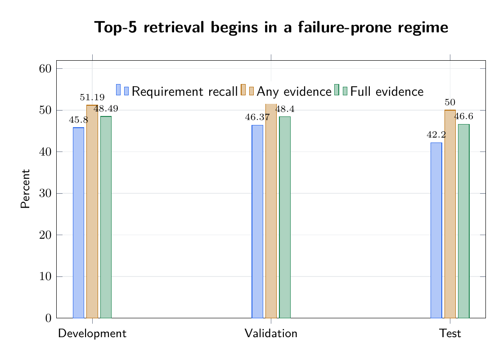
The distinction between any evidence and full evidence is important. On validation at top-5, any-evidence rate is 52.88%, while full-evidence rate is 48.40%. At top-20, those become 69.23% and 63.78%. Finding something relevant does not imply that all required operands are present.
One brute-force response is to increase k for everyone. At top-50, validation requirement recall reaches 70.04% and full-evidence coverage 70.83%. But this grows context, cost and noise for every question. A healing protocol instead starts with a narrower state and spends additional retrieval budget only on open cases.
The development run shows real transactional behavior
The residual gives us a direct audit trail of accepted state changes. Across the major development stages it falls from 2,383 to 1,607, then to 1,064, then to 915.
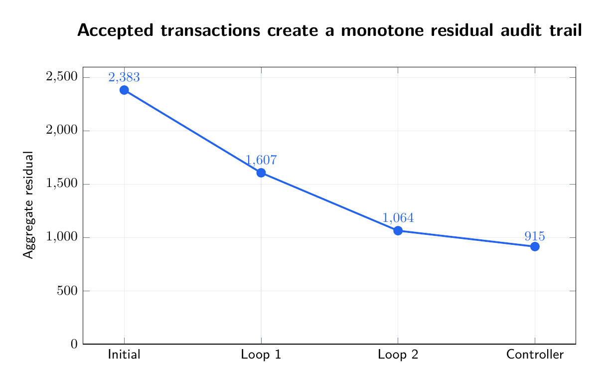
Loop 1 targeted unresolved requirements and, after verifier-failure recovery, committed 323 proposals while rolling back 442. Loop 2 changed the action space to document-local repair and committed 233 while rolling back 345.
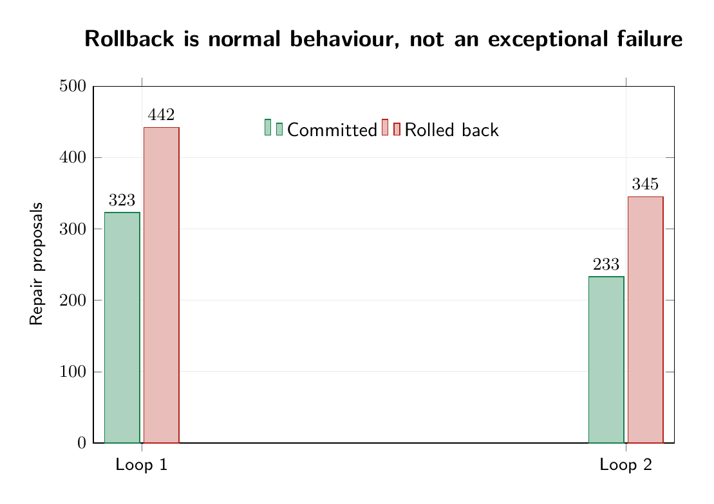
The high rollback count is a feature of the protocol, not an embarrassment to hide. If every retry commits, the controller is not protecting state; it is merely mutating it.
The later autonomous retrieval controller begins with 557 closed and 406 open development cases. It closes 29 more and reduces residual from 1,064 to 915 before the remaining 377 cases are marked retrieval-exhausted. That modest final gain is informative: once the cheap repairs are gone, repeatedly invoking semantic machinery has sharply diminishing returns.
The most useful v0.1 result was negative
The 312-case document-disjoint validation run was deliberately isolated from gold feedback. Gold answers, answer type and scale were quarantined until predictions had been durably frozen. The controller saw question text, retrieval records, document identity and its own state—not the answer key.
Stage 1 attempted all 312 cases from the original top-5 evidence. Only 39 produced an answer on this path; 273 were routed to healing. Stage 2 expanded same-document evidence for those 273 cases and recovered exactly one additional answer. The remaining 272 cases were later handled by a compact terminal best-effort resolver.
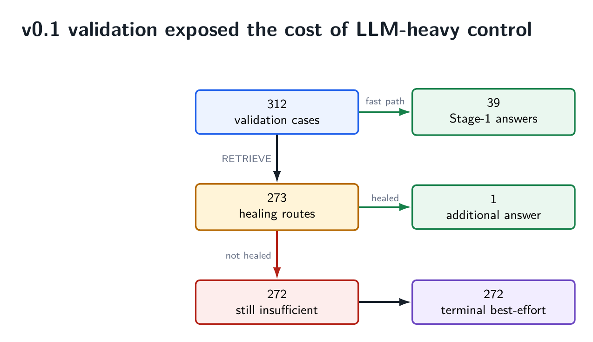
That negative result is more valuable than a polished demo. It shows that a principled control graph can still be a poor execution graph.
Stage 1 averaged 25.45 seconds per validation case. Stage 2 averaged 36.29 seconds per healing case. The terminal resolver averaged 3.55 seconds per unresolved case, processing all 272 in 15.82 minutes on the same laptop GPU.
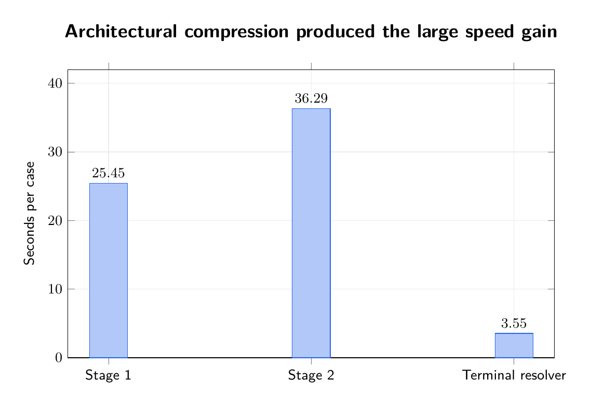
The complete frozen v0.1 validation lineage ends with 312/312 terminal predictions, normalized exact match 0.2660, mean token F1 0.5546, and 857 accumulated Qwen calls, or 2.747 calls per validation question. The release does not present those accuracy numbers as the endpoint. They are measurements of a control prototype whose main purpose was to expose the architecture and its bottlenecks.
v0.2: preserve the protocol, collapse the call graph
The from-scratch v0.2 notebook follows the obvious lesson from v0.1: use language models where semantic generation is needed, not as generic control-flow glue.
Its hot path is deterministic document-local hybrid retrieval, one Qwen answer pass, deterministic grounding and arithmetic verification, evidence expansion only on failure, then at most one Qwen repair pass and another deterministic check. There is no Qwen observer conversation, no Qwen verifier conversation, no Qwen query-rewrite conversation, and no unbounded iterative repair loop.
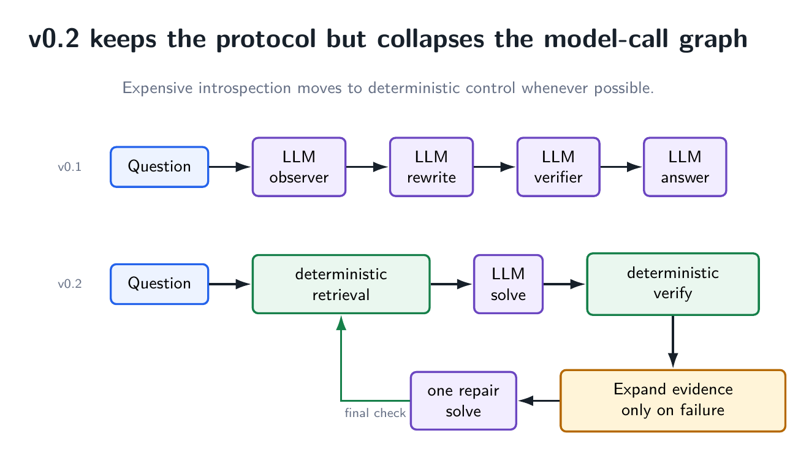
For retrieval, v0.2 fuses document-local dense similarity and lexical ranking using reciprocal-rank fusion. It then uses a compact answer contract: final answer, cited evidence IDs, and an arithmetic expression when calculation is required. The arithmetic expression is restricted to safe operators and checked deterministically against numbers present in the cited evidence.
This is the architectural direction suggested by the v0.1 measurements: deterministic retrieval fusion, deterministic verification, prompt compaction and batching first; additional agent roles only if they can justify their cost.
A useful systems invariant: at most two semantic solves
If every one of N questions receives one initial solve, and only the H ≤ N questions that fail deterministic verification receive one repair solve, then semantic generation calls obey a hard ceiling.
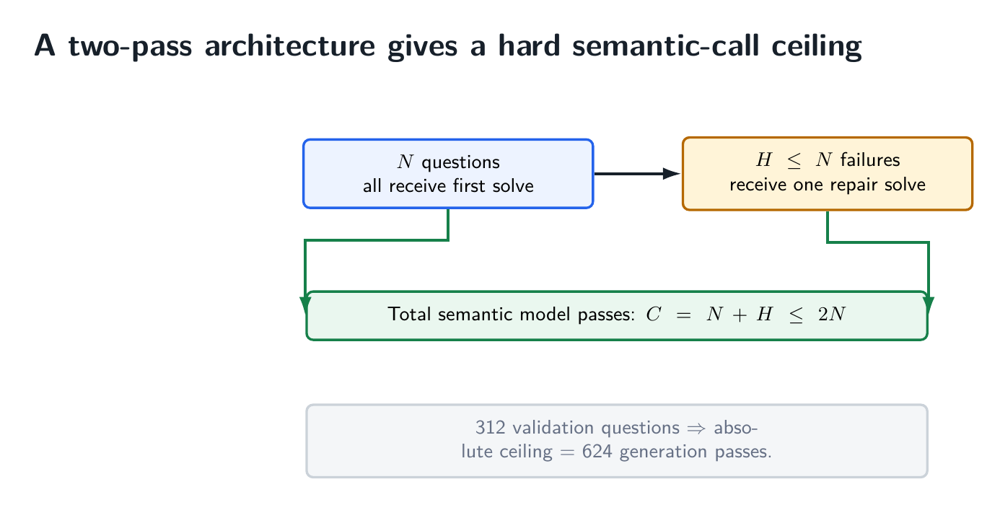
This is a systems property, not an average-case hope. It does not guarantee low latency by itself, but it prevents the control plane from silently turning one question into an open-ended conversation among several model roles.
What can change without changing the protocol?
Almost everything underneath it. A dense retriever can become sparse or hybrid. Chroma can be replaced by another evidence store. The generator can be local, hosted, larger, smaller or specialized. The verifier can be deterministic, model-based or hybrid. The application can move from financial QA to scientific search, legal document QA, code retrieval or an internal knowledge base.
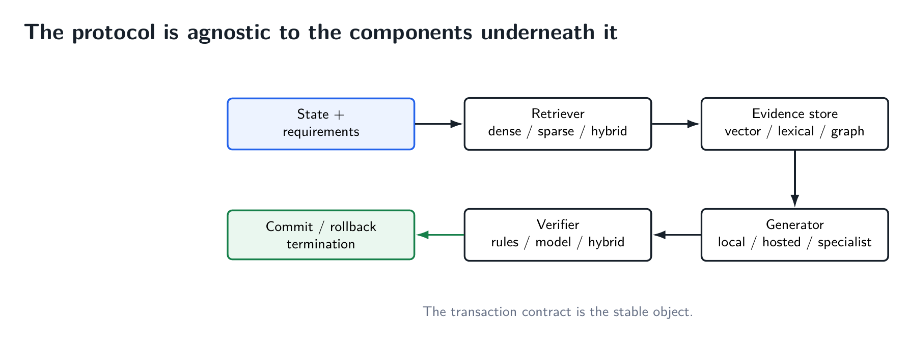
The requirement abstraction will be domain-specific. A legal question may require jurisdiction, date and clause. A code-retrieval task may require symbol definition, caller and version. A scientific claim may require method, population and numerical result. The residual is therefore not meant to be one universal hand-designed formula. What matters is that the controller has a query-specific, externally inspectable notion of unresolved evidence.
How I would implement the protocol in a new RAG system
The minimal recipe is short enough to be useful.
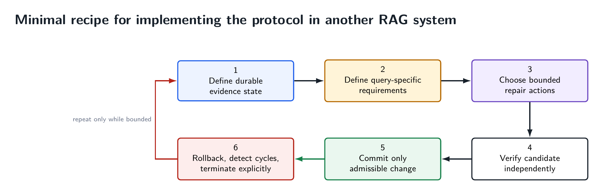
- Define durable evidence state. Give evidence stable IDs. Store the currently committed set independently of the prompt.
- Define query-specific requirements. State what must be supported for this question to close, and freeze those requirement identities during repair.
- Choose a bounded action set. For example: lexical search, dense search, document expansion, metadata filters, or a single query rewrite.
- Verify proposals independently. Do not let the action that proposed a state certify its own success without an external guard.
- Commit only admissible improvement. Require measurable progress and protection of already-supported requirements.
- Rollback and terminate explicitly. Record cycles, exhaustion, stagnation, insufficiency and technical failures as distinct outcomes.
What the protocol does not solve
Transactionality does not magically make retrieval accurate. It does not guarantee that the requirement decomposition is correct. It does not guarantee that a verifier is sound. It can be overly conservative: a strict one-step residual decrease may reject a useful lateral move that would enable a larger improvement two steps later. Semantic cycle detection is harder than exact evidence-ID cycle detection. The best residual design may be domain-specific.
Those are research problems, not reasons to hide the control state. In fact, making the state explicit makes the failure modes easier to study. We can separately measure requirement quality, repair proposal quality, verifier precision, rollback frequency, cycle rate, terminal class distribution, call complexity and answer accuracy.
There is also an important distinction between protocol correctness and production efficiency. v0.1 deliberately prioritized explicit control semantics and paid too much for them. v0.2 moves toward the opposite end: deterministic machinery on the hot path and the language model reserved for bounded semantic solving. A mature implementation needs both.
Where this sits relative to adaptive and self-correcting RAG
The phrase “self-healing RAG” predates this repository, and the broader literature already contains active retrieval, self-reflection, corrective retrieval, self-evaluation, query reformulation and agentic orchestration. The repository does not claim ownership of that phrase or of adaptive recovery in general.
Its narrower claim is architectural: a RAG controller organized explicitly as a transaction system over persistent evidence state, with a discrete requirement residual, protected support, strict-improvement commit/rollback, durable transaction history, cycle detection and bounded autonomous escalation. That boundary is intentionally falsifiable. An earlier implementation exhibiting the same combination would narrow the claim.
That is a healthier way to frame the contribution than saying the system is simply “more agentic.” The protocol can be compared, implemented, falsified and improved without depending on a particular model brand.
The main lesson
RAG reliability is often discussed as if the only levers are better embeddings, better reranking and stronger language models. Those matter. But once a system is allowed to repair itself, another question becomes unavoidable: what governs state change?
Self-Healing RAG proposes a concrete answer. Retrieval failure becomes observable state. Repair is tentative. Verification is separate from proposal. Improvement must satisfy invariants. Rejected experiments roll back. Repeated states and exhausted actions terminate. The system may succeed, abstain or escalate, but it does not silently mutate its way through an unbounded sequence of contexts.
The important object is not the model. It is the contract that decides when new evidence is allowed to replace old evidence.
That is why this belongs naturally as a protocol plus executable examples. The proof of concept shows the semantics in the open, including where they are slow and where they fail. The next implementations can become much faster without changing the idea they are implementing.
Selected references
- Lewis et al., “Retrieval-Augmented Generation for Knowledge-Intensive NLP Tasks,” NeurIPS 2020. arXiv:2005.11401.
- Karpukhin et al., “Dense Passage Retrieval for Open-Domain Question Answering,” EMNLP 2020. arXiv:2004.04906.
- Reimers and Gurevych, “Sentence-BERT: Sentence Embeddings using Siamese BERT-Networks,” EMNLP-IJCNLP 2019. ACL Anthology.
- Zhu et al., “TAT-QA: A Question Answering Benchmark on a Hybrid of Tabular and Textual Content in Finance,” ACL-IJCNLP 2021. ACL Anthology.
- Jiang et al., “Active Retrieval Augmented Generation,” 2023. arXiv:2305.06983.
- Asai et al., “Self-RAG: Learning to Retrieve, Generate, and Critique through Self-Reflection,” 2023. arXiv:2310.11511.
- Yan et al., “Corrective Retrieval Augmented Generation,” 2024. arXiv:2401.15884.
- Es et al., “RAGAS: Automated Evaluation of Retrieval Augmented Generation,” 2023. arXiv:2309.15217.
- Saad-Falcon et al., “ARES: An Automated Evaluation Framework for Retrieval-Augmented Generation Systems,” 2023. arXiv:2311.09476.
- Kephart and Chess, “The Vision of Autonomic Computing,” Computer, 2003.
- Salehie and Tahvildari, “Self-Adaptive Software: Landscape and Research Challenges,” ACM Transactions on Autonomous and Adaptive Systems, 2009.